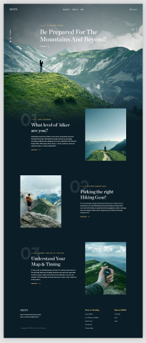

About the project
Objective: To learn how to work with Animations css, add Parallax effects when moving the mouse, when scrolling,Use the GULP builder
Technologies: - PARCEL, SASS, PUG
- JAVASCRIPT;
BY MEANS OF JAVASCRIPT WERE IMPLEMENTED: Animation, Parallax effect - it can liven up illustrations and text and add depth to your site without the need for complex design finesse.
Open page